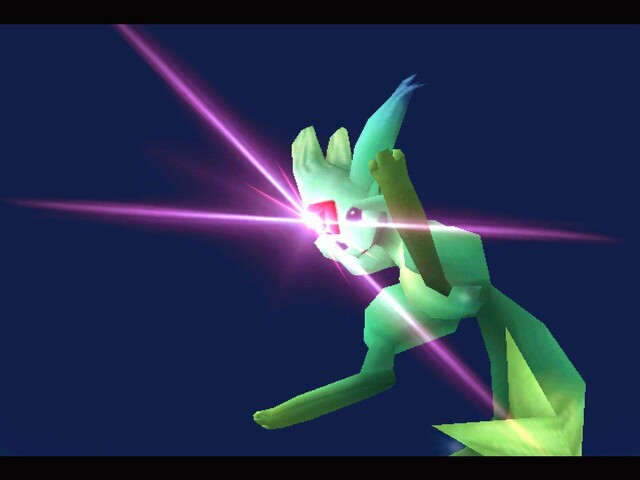

|  | |||||||
| Carbuncle | |||||||
| Un linguaggio per la modellazione dei combattimenti nei giochi di ruolo | |||||||
| Abstract | |||||||
|
Carbuncle è un progetto che mira a creare un linguaggio che modelli i combattimenti nei giochi di ruolo, a creare un analizzatore sintattico per tale linguaggio e uno semantico che sfrutti una logica semplificata
| |||||||
| Grammar | |||||||
| Author | |||||||
| |||||||
| Download | |||||||
Nota: Per il codice del progetto mandatemi una mail all'indirizzo sopra e ve lo manderò senza problemi | |||||||